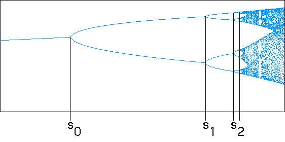

Suppose we note the s-values where successive period-doubling bifurcations occur.
The first few points are illustrated in the picture.
|  |
Unfortunately, calculating the bifurcation values si
to high accuracy is very difficult. Much easier is to determine the
superstable values s*i, the s-values
in each periodic window where
| Here are the first 14 supersable s*i |
The simplest approach to detect a scaling relation between the s*n is to calculate how the dstance between them changes. That is, find the ratio of successive differences.
| Here are the ratios of the differnces of the first few supersable s*i. |
It's interesting that the ratios of successive diatances converge, but is this enough to earn Feigenbaum a MacArthur grant? The real interest in this constant comes from its universality.
| There is another constant associated with this scaling. |
Return to Deterministic Chaos.